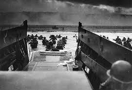

Elecciones europeas
El caldo de cultivo existente a nivel social, combinado con la Gran Depresión de inicios de los 30, hizo que la débil República de Weimar no fuera capaz de mantener el orden interno; los continuos disturbios y conflictos en las calles incrementaron la exigencia de orden y seguridad por parte de sectores de la población cada vez más amplios. Sobre esa ola de descontento y rencor, el Partido Nazi, liderado por Adolf Hitler se presentó como el elemento necesario para devolver la paz, la fuerza y el progreso a la nación. Los ideólogos del partido establecieron las controvertidas teorías que encauzarían el descontento y justificarán su ideario: la remilitarización era imprescindible para librarse del yugo opresor de las antiguas potencias aliadas; la inestabilidad del país era ocasionada por movimientos sociales de obediencia extranjera (comunistas) o grupos de presión no alemanes (judíos), culpables además de haber apuñalado por la espalda a la Gran Alemania en 1918; además, Alemania tiene derecho a recuperar los territorios que fueron suyos, así como asegurarse el necesario espacio vital (Lebensraum) para asegurar su crecimiento y prosperidad. Todas estas ideas quedaron plasmadas en el Mein Kampf.
Partiendo de la sensación de afrenta originada por el Pacto de Versalles, los nazis potenciaron, alimentaron y extendieron la necesidad de reparación en la sociedad alemana, mezclando los problemas reales con las necesidades de su propio programa político, presentando el militarismo y la adherencia a la disciplina fascista como las únicas vías capaces de reconducir la situación. Así se justificó la represión brutal de cualquiera que no pensara del mismo modo o fuera percibido como un enemigo del Estado. Y el clima existente a causa del Pacto hizo que a parte de la sociedad no le preocupase lo más mínimo el incumplimiento de cualquier tipo de tratado internacional. Hasta 1932, el NSDAP fue incrementando su cuota electoral en las elecciones federales, manteniendo un estilo político igual de bronco y agresivo que el que practicaba en la calle.
En noviembre de 1932 tienen lugar las octavas elecciones federales alemanas, en las que el NSDAP logra un 33,1 % de votos (aunque bajó algo más de un 4 %). Al ser la lista más votada y ante la imposibilidad de lograr una opción de consenso entre las demás fuerzas políticas, el presidente Hindenburg nombra canciller a Hitler y le ordena formar gobierno.
El 27 de febrero de 1933, un incendio arrasa el Reichstag, la sede del parlamento alemán. A raíz de este suceso, Hitler declara el estado de excepción. Pronto surge desde el partido nazi la acusación de que los comunistas son los instigadores de la quema, y Hitler logra que un Hindenburg ya muy mermado de salud firme el Decreto del Incendio del Reichstag, aboliendo tanto al partido comunista como a cualquier organización afín a ese partido.
Con sus principales enemigos políticos ilegalizados, Hitler procedió a convocar las novenas elecciones federales alemanas el 5 de marzo de 1933. Esta vez logra un 43,9 % de votos y pasa a gobernar, en coalición con el DNVP, en mayoría absoluta. Una vez conseguido el poder político, para lograr el apoyo de la cúpula del ejército (Reichswehr), ordenó asesinar a los dirigentes de las SA, en la llamada noche de los cuchillos largos, la noche del 30 de junio al 1 de julio de 1934.
Hitler asume el cargo
Hitler restauró en Alemania el servicio militar generalizado que había sido prohibido por el Tratado de Versalles, remilitarizó la Renania en 1936 y puso en práctica una política extranjera agresiva, el pangermanismo, inspirada en la búsqueda del Lebensraum, destinada a reagrupar en el seno de un mismo estado a la población germana de Europa central, comenzando por Austria (Anschluss) en marzo de 1938.
El principal objetivo declarado de la política exterior alemana de la época inmediatamente anterior a la guerra era, por una parte, la recuperación de esos territorios, así como del Corredor polaco y la Ciudad libre de Dánzig, en los antiguos territorios de Prusia perdidos por Alemania después de 1918. Esas reclamaciones territoriales constantes constituían elementos importantes de inestabilidad internacional, pues Berlín reivindicaba abiertamente su restitución, de forma cada vez más agresiva, con la intención de reconstruir la Gran Alemania Großdeutschland. El apoyo al levantamiento militar del general Francisco Franco en España por parte de Italia y Alemania con tropas y armamento desafió abiertamente al acuerdo de no-intervención en el conflicto civil (Guerra Civil Española) de las naciones extranjeras. Hitler había firmado ya el Pacto de Acero con Mussolini, el único de los dirigentes europeos con un ideario similar. El apoyo a las fuerzas franquistas fue un intento de establecer un Estado fascista controlando el acceso al Mediterráneo con vistas a una futura guerra europea, algo que solo funcionó a medias.
El oeste de Checoslovaquia (la región conocida como los Sudetes) era el hogar de una gran cantidad de población de ascendencia germana, cuyos derechos, según el gobierno alemán, estaban siendo infringidos. La anexión de los Sudetes fue aceptada en los Acuerdos de Múnich en septiembre de 1938 tras una conferencia tripartita entre Alemania, Francia y Gran Bretaña, donde el francés Édouard Daladier y el primer ministro británico Neville Chamberlain, siguiendo una Política de apaciguamiento, confiaron en que sería la última reivindicación de la Alemania nazi. Hitler había transmitido personalmente esa idea a Chamberlain, tras entregarle un conjunto de informes con supuestas atrocidades cometidas contra habitantes alemanes en los Sudetes. La postura inglesa y francesa se debía en gran parte a la reticencia de sus poblaciones a verse envueltos de nuevo en una guerra a escala mundial, así como al convencimiento (sobre todo por parte de ciertos sectores de la sociedad inglesa) de que realmente el Tratado de Versalles había sido excesivo.
Sin embargo, en marzo de 1939 los ejércitos de Alemania entraron en Praga tomando el control de los territorios checos restantes. Al día siguiente, Hitler, desde el Castillo de Praga, proclamó el establecimiento del Protectorado de Bohemia y Moravia, a la vez que propició la aparición del Estado títere de Eslovaquia. También se apoderó del territorio de Memel, perteneciente a Lituania.
Benito Mussolini se había convertido en líder indiscutido de Italia durante ese mismo período de entreguerras. Expulsado del Partido Socialista Italiano por apoyar la participación de Italia en la Primera Guerra Mundial, en 1919 fundó los Fasci italiani di combattimento, grupo militar integrado por excombatientes, que reprimían a los movimientos denominados obreros y al partido socialista; era por tanto análogo a los Freikorps alemanes tanto en ideario como en actuación. El fascismo creado por Mussolini defendía un régimen militarista, autoritario, nacionalista, que centralizara el poder en una persona y un movimiento (Partido Nacional Fascista en el caso italiano) y contrario a las instituciones democráticas.